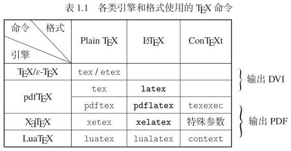
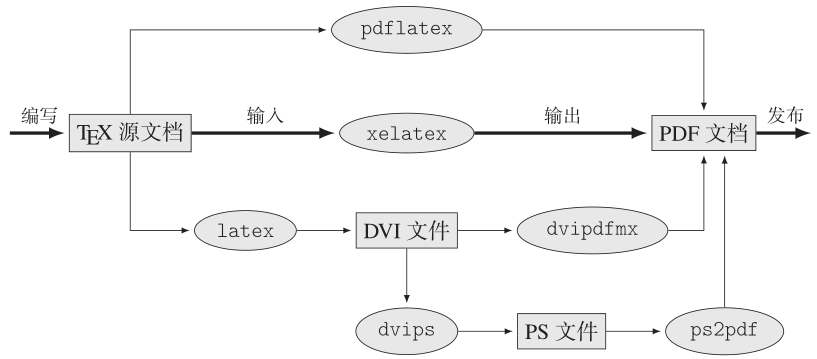

1 TeX
TeX是Donald E. Knuth开发的一个排版系统。用户可以使用一系列的低级控制指令指导系统排版，同时支持变量、作用域、控制流和函数定义。
TeX可执行文件/引擎是一个将源文件渲染成排版后可供阅读的文件的二进制程序。较早期的输出文件为DVI，目前较流行的文件为PDF。以下方括号内代表对应的可执行文件。
2 TeX宏包/TeX格式
由于TeX的使用十分繁杂，因此就发展出了更高级别的宏包方便人们使用。
Plain TeX [tex]: 最原始的TeX宏包。包含了一些基本的宏命令。
LaTeX [latex]: 目前版本为LaTeX2e，早先版本为LaTeX2.09。目前最常用的格式。
ConTeXt [context]
Texinfo [tex, makeinfo]: 将Texinfo文件转换成HTML、DocBook、Emacs info、XML和文本。配合其他的工具可以转换为DVI或PDF。
Eplain [eplain]: Plain TeX的拓展。
3 改良的TeX可执行文件/引擎
由于TeX是一个1970年代的程序，因此并不能适应现在的一些渲染需求。
pdfTeX [pdftex]: 一个可直接渲染pdf文件的引擎。
XeTeX [xetex]: 与pdfTeX差不多，但支持UTF-8。
LuaTeX [luatex]: 使用lua作为脚本语言，可以进行更加方便的编程。
e-TeX [etex]: 是TeX的一个拓展。
引擎与渲染格式的配合：
使用pdftex --fmt=latex
为方便使用，就写了

使用不同的方法渲染至pdf的步骤：

4 TeX发行版
TeX发行版能够提供一套成体系的TeX工具。通常人们说安装TeX是指安装发行版。
TeX Live: 是 TUG (TeX User Group) 维护和发布的 TeX 系统，可说是“官方”的 TeX 系统。
MiKTeX: 较为轻量级的一个发行版，初始安装仅包含最基本的宏命令，后续按需安装。
MacTeX: TeX Live在mac上的替代品。
5 编辑器
vscode、vim、tex studio之类
用于编辑tex文件，渲染工作由引擎进行。
6 CTAN
CTAN是“Comprehensive TeX Archive Network”的首字缩写，为世界上最主要的TeX资源集散网站，搜集了关于TeX的各种文件与软件等等。
7 参考
[1] https://texfaq.org/FAQ-texthings
[2] https://www.tug.org/levels.html。通过这里也可以访问tug官网。
[3] LaTeX入门 by 刘海洋
[4] https://liam.page/2018/11/26/introduction-to-TeX-engine-format-and-distribution/。更加详细的介绍。